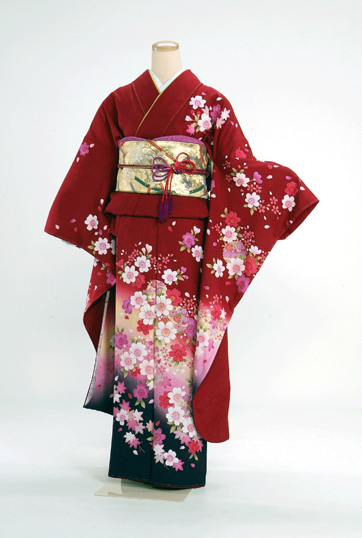
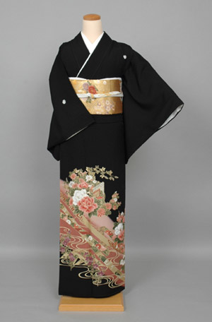
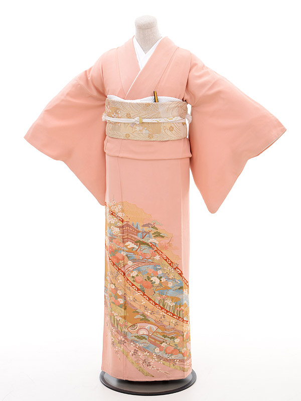
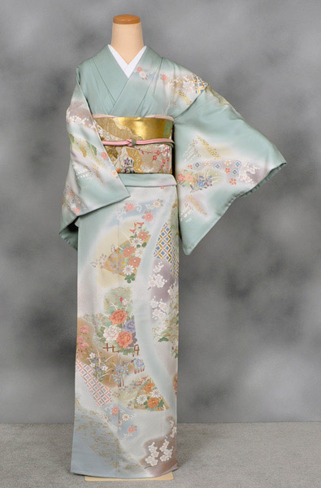
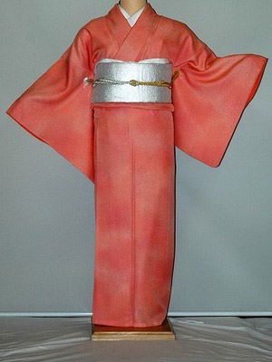
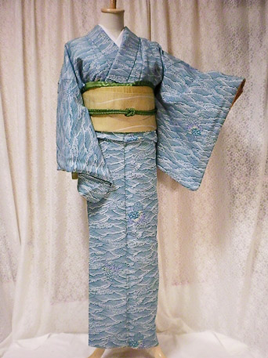

Furisode
This is the formal dress for ceremonies such as a wedding ceremony, a reception party, and a coming-of-age ceremony. This kimono is only for the singles. Furisode has long sleeves, so it gives us a very gorgeous atmosphere. You should wear a double-woven obi or a one-piece sash.
Kurotomesode
This is the formal dress for ceremonies such as a wedding ceremony and a reception party, and this dress is only for the married woman.
They are patterned with flowers, pine, bamboo, and apricot trees, which represent good fortune. You see those patterns at the bottom of Kimono. When you wear Kurotomesode, you should wear a golden or silvery double-woven obi with it, and a long undergarment should be white.
Irotomesode
When you are invited to a wedding reception, you can wear Irotomesode when it has five family crests on it. Recently it gets more popular to wear Irotomesode than to wear Kurotomesode. You can make it with one or three family crests, but Irotomesode with five family crests is the highest grade. A long undergarment should be white, and you must wear a double-woven obi in any colours which match the colour of kimono.
Homongi
This is a semi-formal dress. You can wear it for wedding ceremonies of your friends, parties and tea ceremonies. There are various colours and designs, so anybody of all ages can wear it. A long undergarment should be plain or a gradation, and obi should be double-woven.
Iromuji
Iromuji is a plain Kimono with single colour. When you have a family crest on it, you can use it as a semi-formal Kimono. You can wear it for ceremonies, a tea ceremony and a Buddhist service on an anniversary of a person’s death. You should wear a double-woven obi for Iromuji.
Komon
This kimono uses stencil printing, and you wear it in various occasions such as casual parties, theatergoing and shopping. You can wear a plain or gradation or patterned undergarment for Komon.